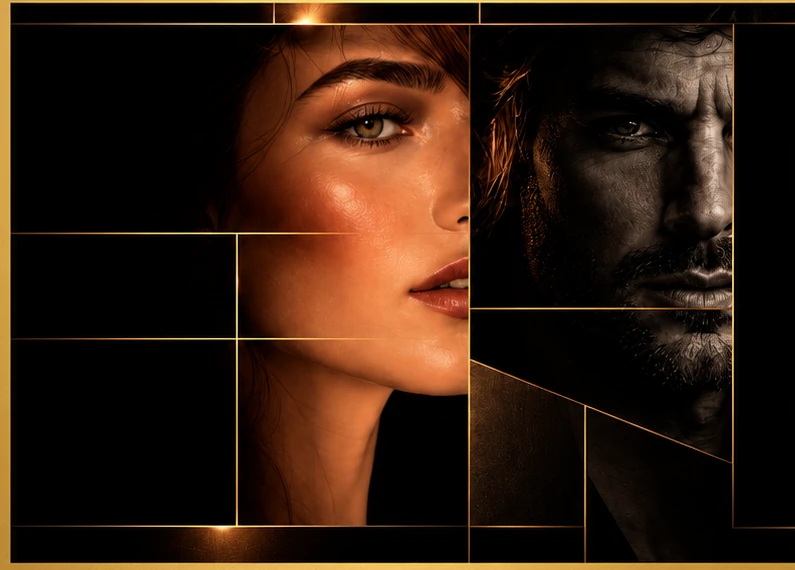
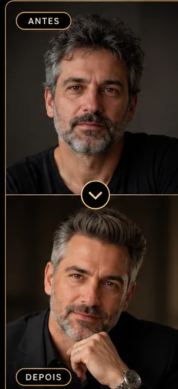
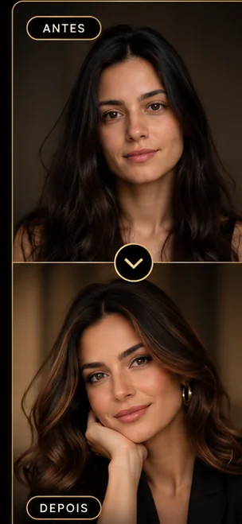
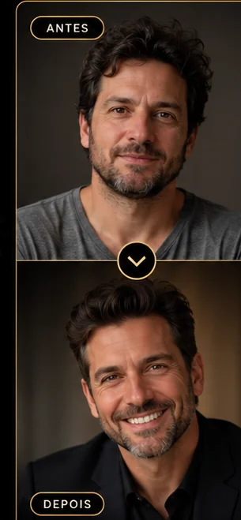

Identidade
O que torna você único.
IMAGEM · ESTRATÉGIA · AUTENTICIDADE
O visagismo vai além da estética. É a arte de unir personalidade, estilo e expressão para criar uma imagem que revela o melhor de você.
DESCUBRA O SEU PERFILDARCÍSIO FISCHER
Nascido em 1977, em Pato Branco (PR), mudou-se com a família para o Oeste de Santa Catarina em 1992. Em 1996, chegou sozinho a Balneário Camboriú, onde iniciou sua carreira como Hair Stylist em 2004.
Em 2006, ampliou seus conhecimentos na escola internacional Pivot Point. Tornou-se visagista em 2010 e coach e analista comportamental em 2016.
Essa trajetória deu origem ao Método Código da Imagem, que conecta beleza, identidade e comportamento.
O QUE É VISAGISMO?
Seu rosto, sua personalidade e seus objetivos fazem parte da imagem que você transmite.
O que torna você único.

AUTOCONHECIMENTO
Descubra tendências da sua personalidade e entenda como elas podem influenciar sua imagem, sua comunicação e suas escolhas.
Uma oportunidade de olhar para sua essência com mais atenção.
MÉTODO
Uma metodologia autoral que une visagismo, análise comportamental e estética para transformar a aparência em uma expressão autêntica de quem você é.
RESULTADOS
Cada imagem conta uma história. Conheça como um olhar individualizado pode valorizar uma presença.
VER MAIS RESULTADOS


VAMOS CONVERSAR?
Agende sua consultoria e descubra como o visagismo pode revelar o melhor de você.
FALAR PELO WHATSAPPContato disponível pelo WhatsApp
PERGUNTAS FREQUENTES
É uma abordagem que considera traços do rosto, estilo, personalidade e objetivos para construir escolhas de imagem mais coerentes com quem você é.
Ajuda a compreender como sua imagem comunica identidade, a valorizar características pessoais e a fazer escolhas de cabelo e estilo com maior intenção.
O atendimento começa com uma conversa sobre sua identidade, preferências e objetivos. Em seguida, são analisados elementos da sua imagem para definir orientações personalizadas.
A duração depende do serviço contratado. Entre em contato pelo WhatsApp para saber o tempo previsto e os detalhes da sua consultoria.
Não. O visagismo pode atender pessoas de diferentes gêneros e estilos, respeitando as particularidades de cada indivíduo.
É a metodologia autoral de Darcísio Fischer que reúne descoberta da essência, análise da moldura e revelação da imagem para orientar uma expressão visual autêntica.